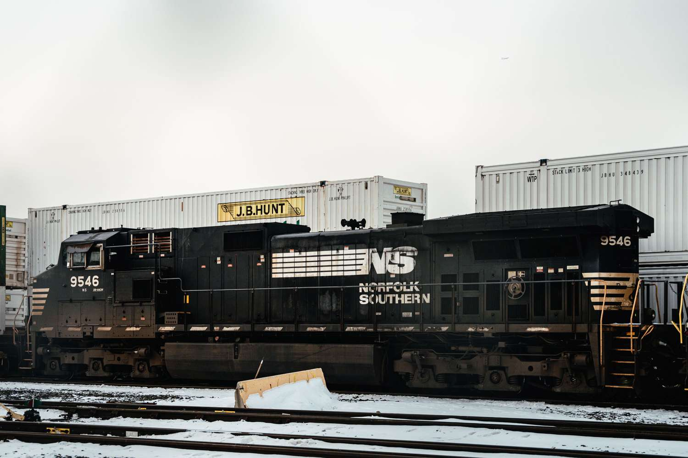
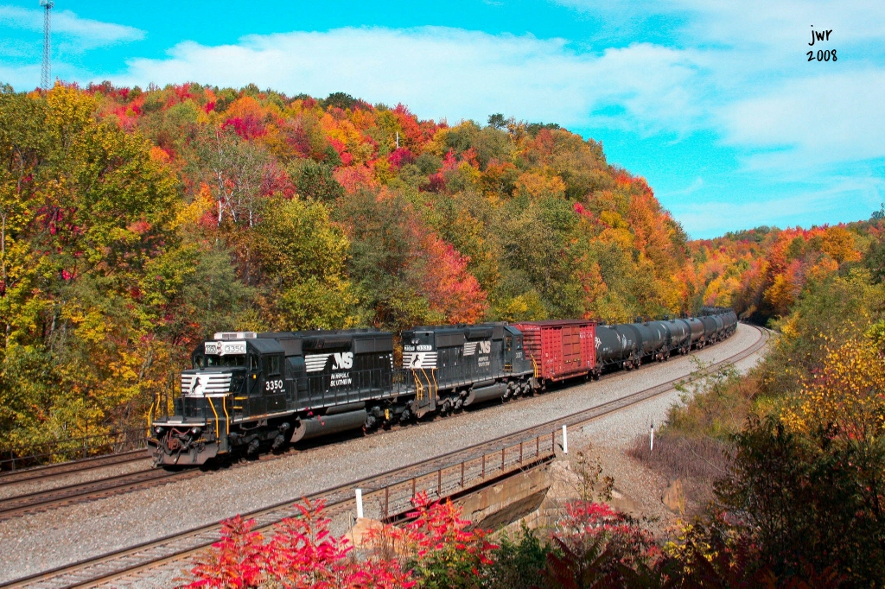

Selected Publications

Machine-learning framework for detecting defects or conditions of railcar systems
US Patent App. Pending - An innovative machine learning framework designed to detect defects and conditions in railcar systems, improving safety and maintenance efficiency.
View on Google Scholar

System and Method for Hybrid-Model-Based Micro-Assembly Control
US Patent App. 18/462,332, 2024 - A novel system combining physics and machine learning models for precise control in micro-assembly processes.
View on Google Scholar

Toward Automated Classroom Observation
IEEE Transactions on Affective Computing 14 (1), 664-679, 2021 - Multimodal Machine Learning to Estimate CLASS Positive Climate and Negative Climate in educational settings.
View on Google Scholar